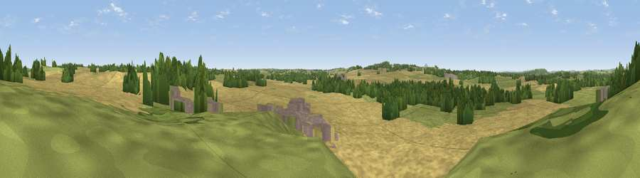

Viewpoint near Outwoods
#37700 in England · top 82% of its area beats it · near OutwoodsThe view, rendered

A 360° render of this exact spot computed from the terrain model, tree cover and land cover — summer colours, afternoon light, calibrated against photographs of famous viewpoints. Real trees, hedges and buildings will differ in detail.
The panorama
Grey silhouette: terrain skyline in each direction (720 bearings, Earth curvature and refraction included). Dashed green: skyline with trees (+15 m) and buildings (+8 m) as obstacles. Blue strip: how far the ground is visible on each bearing.
Where the view opens
Wedge length = distance to the farthest visible ground on that bearing (vegetation-aware). Rings at 10, 25 and 50 km.
What fills the view
67% cropland · 18% grassland · 12% woodland · 2% built-up
Angular shares of the visible panorama (visual magnitude), not map area. Landscape diversity 0.40 (0–1 Shannon).
Key numbers
More beautiful places nearby
The staircase of upgrades: each row has a higher view potential than everything closer. Driving times are estimates from straight-line distance, calibrated against real road routing — check an actual route before setting out.
| Place | Direction | Drive | Score |
|---|---|---|---|
| Viewpoint near Outwoods | N · 1 km | ~2 min | 44.9 |
| Viewpoint near Outwoods | NNE · 1 km | ~3 min | 56.8 |
| Viewpoint near Sheriffhales | SW · 3 km | ~8 min | 63.8 |
| Viewpoint near Sheriffhales | SW · 4 km | ~8 min | 64.4 |
| Viewpoint near Newport | WNW · 6 km | ~12 min | 66.4 |
| Viewpoint near Priorslee Village | SW · 8 km | ~17 min | 70.4 |
| The Ercall | WSW · 16 km | ~29 min | 79.4 |
| Viewpoint near Little Wenlock | WSW · 18 km | ~31 min | 84.2 |
52.75446, -2.31666 · source: screening · position refined by local search. Computed location — check access rights before visiting.